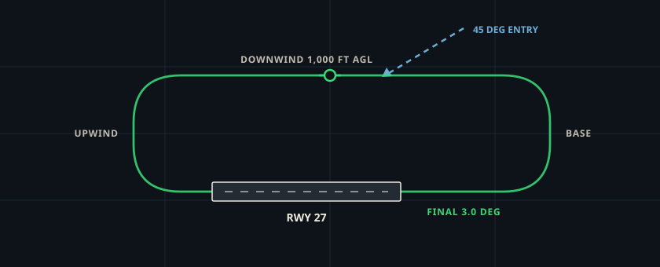
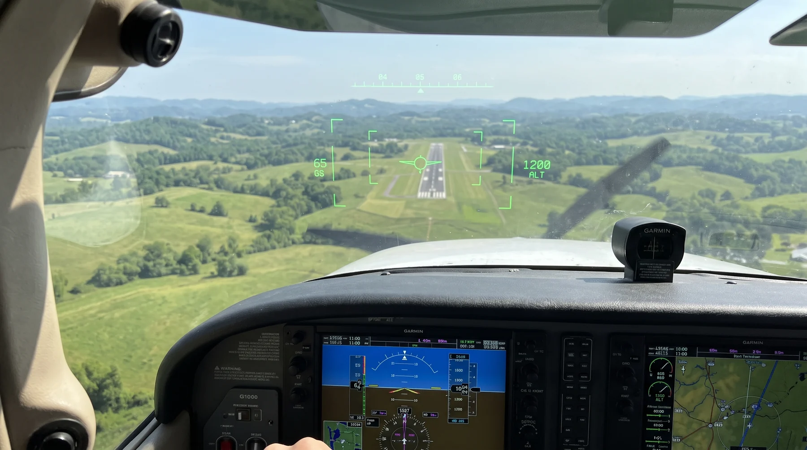
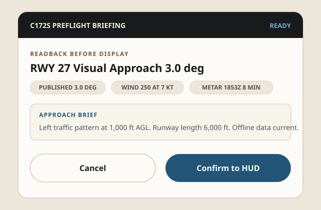

Terminal area
Traffic patterns and runway alignment.
Enter non-towered airports with 45-degree entry cues, downwind and base legs, and runway markers aligned with the field.

General aviation head-up display
Line Up projects approach paths, traffic, and flight data into your field of view. Fly approaches, traffic patterns, and cross-country legs with your eyes outside.
Portable setup. No panel modification. Supplemental situational awareness alongside certified avionics.

Head-up display
Flight data, approach gates, and alerts sit in fixed display zones. Alerts stay off the screen during normal flight, and one button press clears the entire display.
Capabilities
Terminal area
Enter non-towered airports with 45-degree entry cues, downwind and base legs, and runway markers aligned with the field.

Approaches
Fly VFR and instrument approaches through four-corner gates with waypoint crossing altitudes and a wind-corrected flight path vector.
Turns and descents sized for your aircraft type
Companion app
Confirm every runway, approach, and route change on the phone before it appears on the HUD. Each weather report displays its observation time and age. In flight, the screen switches to large, dim controls.

Situational awareness
Spot nearby traffic and distant airports in your field of view, backed by headset callouts and time-stamped weather briefings.
Traffic: Conformal markers with relative altitude, trend, and headset callouts
Terrain: Look-ahead terrain and obstacle alerts
Weather: Preflight briefings and radar with observation times and age
Checklists
Checklists advance by phase of flight from preflight through shutdown.
Ground awareness
Visual and audio cues identify approaching runways during taxi.
Offline data
Airports, terrain, obstacles, procedures, and checklists load on your device before taxi.
Review approach guidance, traffic patterns, terrain and weather awareness, and cockpit workflow in detail.
Design principles
Portable hardware, read-only operation, and direct controls for owner-flown and rental aircraft.
Common questions
No. Line Up is portable and read-only. Nothing wires into aircraft avionics or stays installed in the airplane.
No. Line Up is a supplemental situational-awareness system. Certified panel instruments, avionics alerts, and your visual scan remain primary on every flight.
Yes. Navigation data, terrain, obstacles, procedures, aircraft profiles, and checklists store locally before engine start. Weather and traffic refresh when connectivity is available, and every time-sensitive item displays its age.
Approach gates use open corner brackets with a clear center over the runway aim point. A panel keep-out zone blocks symbology over your gauges, and one physical button press blanks the entire display.
Line Up removes expired or invalid readouts and displays an explicit unavailable label. Stale data is never shown as current.